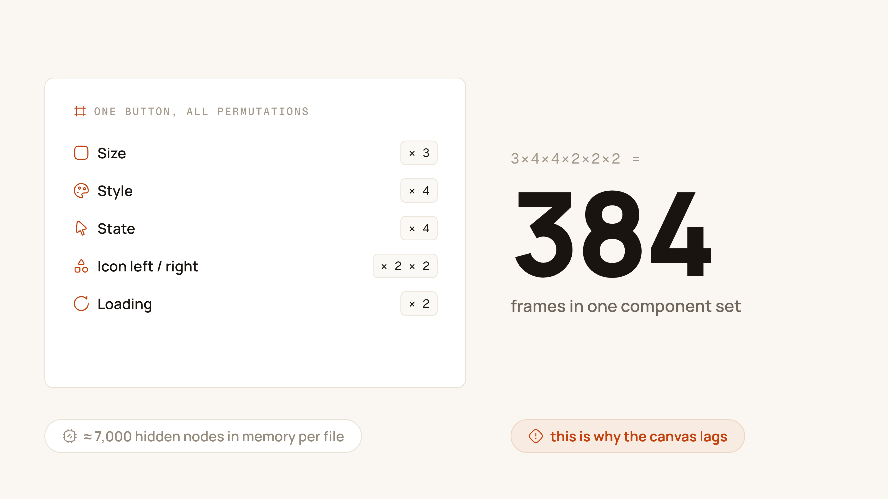
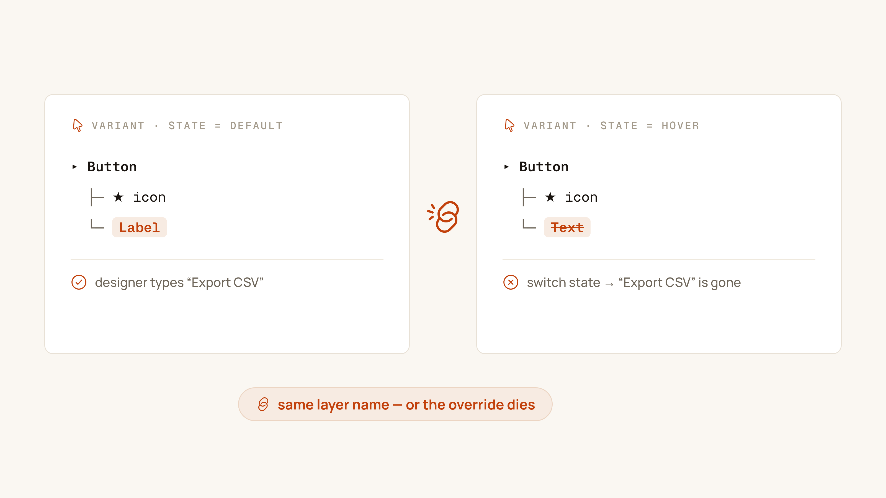
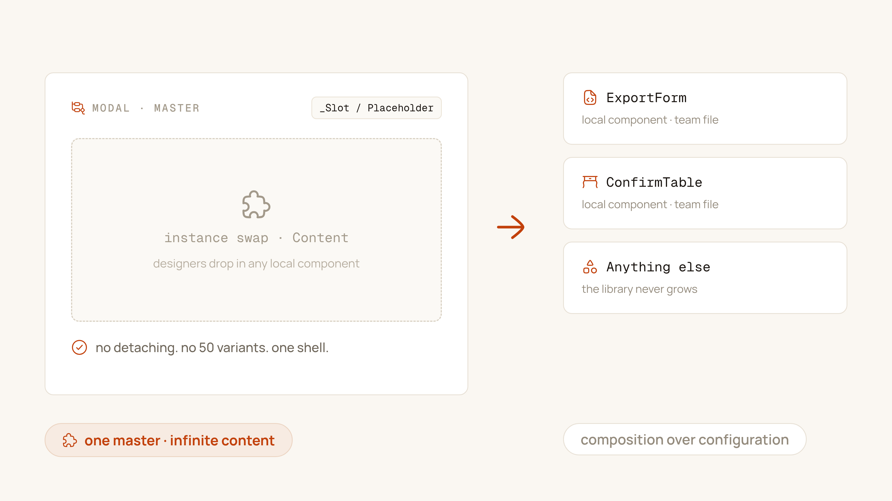

The file opens like molasses. You click a button component on the canvas and wait three seconds for the selection to register. You publish a color change and go make coffee — the progress bar is still crawling when you come back. I've inherited this library more than once: a well-intentioned design team, a tidy naming convention, and a primary button living inside an 80-variant component set that nobody dares to touch.
The instinct behind it is understandable. Figma gives you Variants, so you model every conceivable configuration as a variant. It feels thorough. It demos beautifully. And then it quietly bankrupts the library — in performance, in override bugs, and in the one currency a design system can't afford to lose: the team's trust.
The math of variant explosion
Variant matrices don't grow — they detonate. Every property you add multiplies the frame count, never adds to it. Take a realistic enterprise button:
Size (3) × Style (4) × State (4) × HasIconLeft (2) × HasIconRight (2) × IsLoading (2) = 384 frames
Three hundred eighty-four frames — for one button. And each frame carries its hidden baggage: nested icon instances, spinner layers, hit-area rectangles. That's 7,000+ nodes Figma must render, diff, and re-diff on every publish. This is where the symptoms come from:
- Canvas lag when a set is selected or zoomed — Figma is laying out hundreds of frames you never see.
- WebGL context loss and hard crashes, even on M-series machines, when two or three mega-sets are visible at once.
- Publish timeouts, because the diff payload for one tweak crosses thousands of nodes.
- Useless library analytics — "Button" has 40,000 inserts and the data tells you nothing about which configuration anyone actually uses.

A variant matrix is a promise you make to Figma's renderer. Every new property doubles or triples that promise — and the renderer always collects.
The golden rule: layer names must match
Before we fix the matrix, understand the override bug that haunts these sets. A designer drops a "Secondary / Large" button, types Save changes over the default label, then swaps it to "Primary / Large" — and the text snaps back to "Button". They curse Figma. It's not Figma.
Overrides in Figma are matched by layer name and position. If the label layer is called Label in one variant and Text in another, Figma treats them as two different layers and discards the override on swap. Multiply that inconsistency across 384 frames built by three designers over a year, and overrides reset seemingly at random.
The rule is absolute: identical layer names, identical layer structure, across every variant in the set. When I audit a library, this is the first thing I check — and it's broken in nearly every one.

The slot pattern: composition over configuration
Here's the mental shift. No React engineer builds <Modal variant="exportForm" variant="confirmTable">. They compose:
<Modal title="Export Data">
<ExportForm />
</Modal>The modal owns the chrome — padding, header, close button, overlay. The content is a hole it doesn't care about. Figma can work exactly the same way:
- Build one master component (Modal, Card, TableRow) with a placeholder inside: a local component named
_Slot / Placeholder. The underscore prefix sorts it to the top of the panel and signals "internal — don't ship this." - Expose the slot through an Instance Swap property called Content.
- Build the actual content blocks —
ExportForm,ConfirmTable, whatever the product needs — as separate local components. - Consumers swap the slot, never detach. The master keeps full control of its chrome forever.

Variants vs. Component Properties: the decision matrix
The 80-variant button exists because everything got modeled as a variant axis. Split the concerns and the matrix collapses:
- Variants — mutually exclusive visual states only: primary / secondary / destructive; rest / hover / pressed. If two values could be true at once, it is not a variant axis.
- Boolean property — show/hide for optional elements: icon, badge, divider. One toggle, zero new frames.
- Instance Swap — icons, avatars, and every content slot. Unbounded options, still zero new frames.
- Text property — any string the consumer edits: labels, titles, helper text. Never bake text someone will retype into a variant.
Run the earlier button through this: Size and Style and State stay variants (3 × 4 × 4 = 48, and honestly State can go — prototyping handles it). Both icons become booleans plus swaps. IsLoading becomes a boolean. You just deleted over 300 frames and lost nothing.
The 70–80% cut
This is what the refactor looks like in practice: buttons from 384 frames to a lean set with four properties; dialogs from sixty content-specific variants to one master with a slot; cards, table rows, and list items the same way. Across the libraries I've rebuilt this way, component set sizes drop by 70–80%, publishes go back to seconds, and — the metric that actually matters — designers stop being afraid of the asset panel.
Your components should work like your engineers' components do: a small, sharp API of properties, composed into infinite configurations. If your button needs 384 frames to cover what the product does, the problem isn't Figma. It's the architecture.